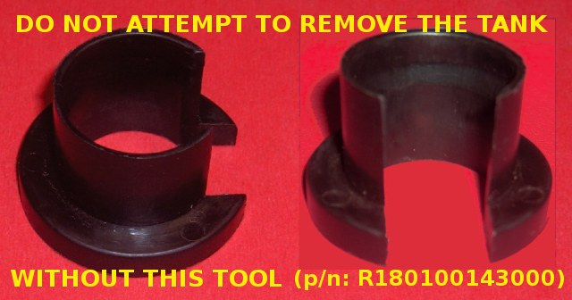
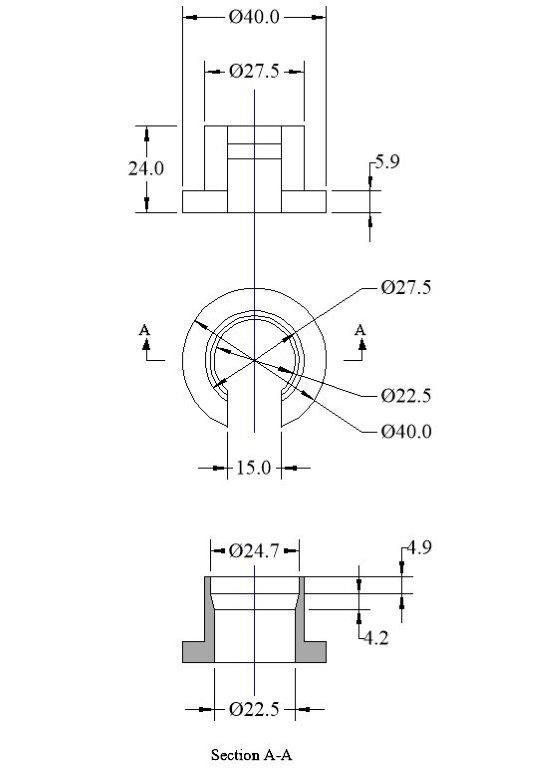

Keys - the book says 4 total, two normal and two flip.
Toolkit contents
Section 6.2 "Maintenance / Tools and accessories supplied", page 62 of the Owner's Manual
(actually p. 33 of the pdf), lists the toolkit.
- Spark plug wrench;
the plug wrench supplied in my kit was too long to clear the frame when trying to remove #1 plug. I shortened it to 150 mm, by cutting off the 17mm end - the plugs are 16mm - and drilling some new 6.5mm holes for the crossbar. The base of the plug is 100mm below the head cover.
- Allen wrench size 3;
- Allen wrench size 4;
- Allen wrench size 5;
- Allen wrench size 8;
- Open wrench size 10/13;
- Cross screwdriver Philips 2 with handgrip;
- Handle for screwdriver;
- Case.
Additionally, my kit came with :-
- 2 rear spring preload adjustment wrenches
- fuel line release collar (part number R180100143000)
- fuel delivery blanking plug

If you lose it, or you never had it, here's the dimensions so that you can make it (thanks to Cam for a decent drawing)

(Ed. - See "An Easier Way To Remove The Tank". Hands up those who have already broken the fuel line release buttons?)
- security lanyard - a curious wire cable, covered in PVC tubing. It is 590mm long, with loops at each end.This cable is a helmet holder. Remove the pillion seat, attach one loop to the wire
labyrinth, thread through the helmet and back to the labyrinth. Replace the seat and your helmet is locked to the
bike.
(I think I'll stick to carrying it.)